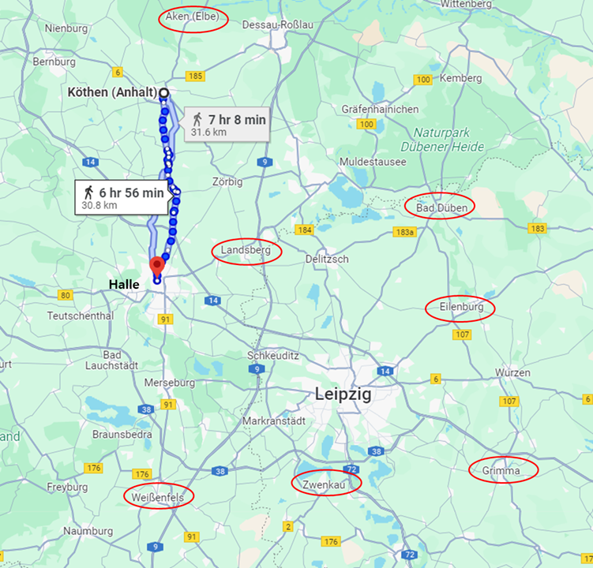
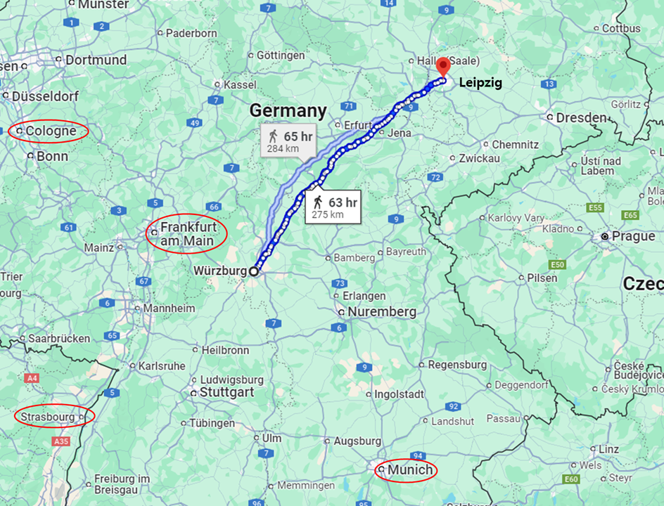
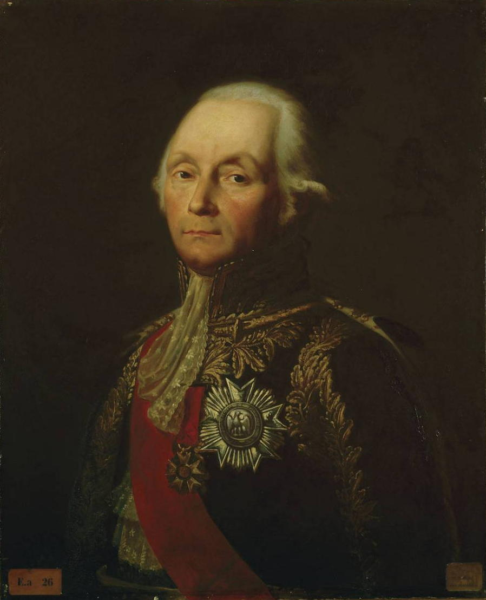
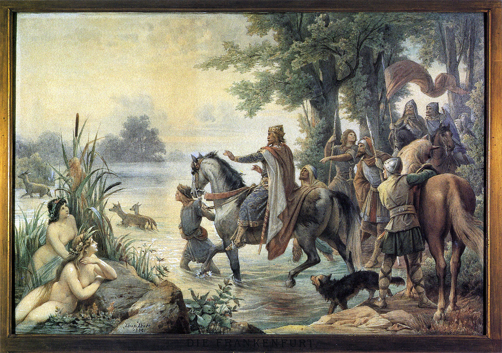
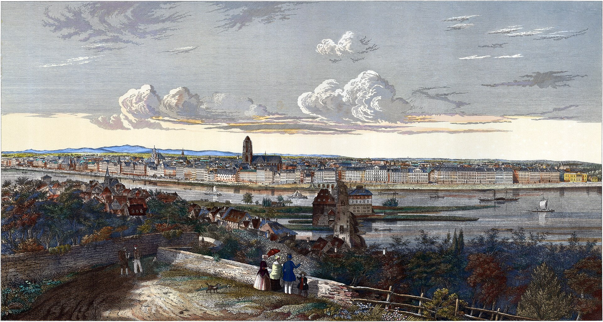

라이프치히로 가는 길 (28) - 슈바르첸베르크는 손빈급
게시: 2025-05-19T08:22:58+09:00
10월 13일 늦은 밤과 14일 새벽에 블뤼허의 사령부로 쏟아져 들어온 정찰 보고는 그의 3가지 어려움을 한꺼번에 해결해주었습니다. 바트 뒤벤에서 대규모 병력이 라이프치히로 이동함과 동시에 약 1만5천의 군단급 병력이 블뤼허가 있는 할러 방향으로 이동 중이라는 보고가 들어온 것입니다. 나중에 알았지만 할러 방면으로 이동하는 군단은 마르몽의 제6군단으로서, 이는 명백하게 블뤼허가 라이프치히로 향하는 것을 막으려는 견제 부대가 분명했습니다. 상황이 이렇게 분명해지면 베르나도트가 아니라 그 할아버지라고 해도 라이프치히로 달려올 수 밖에 없었습니다. 실제로도 베르나도트 역시 14일 낮에 블뤼허에게 편지를 써보냈으며, 그 내용은 15일 새벽에 전군을 이끌고 블뤼허와의 합류를 위해 할러 방면으로의 강행군을 시작하겠다는 것이었습니다. 그 역시 나폴레옹의 움직임을 관측하고 있었던 것입니다. 문제는 베르나도트가 블뤼허와 합류하려면 적어도 하루의 행군이 필요하다는 것이었습니다. 특히나 블뤼허의 애간장을 태우던 블뤼허의 예비 탄약 수송대는 베르나도트가 엘베 강변 아켄(Aken)에 붙잡아 놓고 있었으므로 더욱 느릴 수 밖에 없었습니다.

(베르나도트의 병력은 쾨텐 주변에 흩어져 있었으므로 그의 병력은 아무리 빨라도 라이프치히 전투 첫날엔 참전할 수 없었습니다.) 베르나도트를 병적으로 싫어하던 블뤼허와 그나이제나우 등은 이 부분을 침소봉대하며 '베르나도트는 나폴레옹이 엘베강 우안으로 건너간다는 소식에 패닉을 일으켜 엘베강 우안으로 도망치려고 안달이 났었다'라고 기록했으나, 사실 이건 말이 안되는 비난이었습니다. 만약 베르나도트가 정말 나폴레옹을 극도로 무서워 하여 도망치려고 했다면 나폴레옹이 가려고 한다는 엘베강 우안으로 도망친다는 것은 말이 되지 않습니다. 실제로 베르나도트가 블뤼허에게 보낸 편지나 각종 명령서들도 나폴레옹이 베를린으로 향할 것이므로 그 뒤를 추격하여 나폴레옹과 싸우려 했다는 것이 분명히 드러납니다. 하지만 분명히 베르나도트의 판단으로 인해 북부 방면군의 참전이 하루 이상 늦어진 것은 사실이었습니다. 만약 라이프치히 전투가 아우스테를리츠나 예나-아우어슈테트 전투처럼 하루만에 판가름 나는 것이었다면 베르나도트의 북부 방면군은 처음부터 아예 존재하지 않는 것이나 다름 없었을 것입니다. 아무리 베르나도트의 정보 수집과 판단이 정확한 것이었고, 단지 나폴레옹이 막판에 결심을 뒤집어 베를린이 아니라 라이프치히로 진군 방향을 바꾼 것이라고 해도, 이 부분은 쉴드가 불가능합니다. 때마침 알텐부르크의 보헤미아 방면군 사령부에서도 슈바르첸베르크와 알렉산드르의 편지들이 도착하여, 하루라도 베르나도트에 대한 험담을 하지 않으면 입에서 가시가 돋을 지경이던 블뤼허에게 베르나도트의 오판을 짜르에게 고자질할 기회를 주었습니다. 그런 편지에 대한 답장 형식의 뒷담화는 사실 별 의미가 없는 것이었지만, 그 편지들에는 매우 중요한 내용이 담겨 있었습니다. 나폴레옹이 라이프치히로 이동하고 있다는 정보에 근거하여 작성된 그 편지들에는 알렉산드르가 승인한 슈바르첸베르크의 작전 명령서가 동봉되어 있었기 때문이었습니다. 그리고 그 작전 방향은 베르나도트의 오판을 본의 아니게 상당부분 보완해주는 효과를 주었습니다. 슈바르첸베르크의 명령서에 담긴 작전 내용은 한마디로 나폴레옹을 라이프치히에서 포위하고 지구전을 펼치겠다는 것이었습니다. 슈바르첸베르크는 '그 어떠한 성급한 행위도 처벌할 것'이라는 강압적인 단어를 써가며 '신중할 것'을 강조했는데, 이는 상대가 나폴레옹 본인이라는 두려움과 함께, 만약 이번에도 패배를 당한다면 연합군은 두 번 다시 기회를 잡지 못할 것이라는 초조함이 반영된 결과였습니다. 알텐부르크에 모인 세 명의 연합군 군주 모두가 과거 자신의 승리를 확신하던 전투에서 나폴레옹에게 단 하룻만에 모든 것을 잃어버리는 치욕을 겪었을 뿐만 아니라, 바로 한두 달 전에 드레스덴에서도 뼈아픈 패배를 겪었던 것입니다. 나폴레옹은 누가 뭐래도 천재였고 역전의 명수였습니다. 나폴레옹을 상대하는 가장 좋은 방법은 나폴레옹이 잘 하는 짓거리를 못하게 만드는 것이었고, 그건 지루한 소모전을 뜻했습니다. 슈바르첸베르크의 명령서에는 '나폴레옹이 엘베강 전선을 포기한 이유는 드레스덴 일대에서 더 이상 식량을 구할 수 없었기 때문'이라고 적으며, 라이프치히에서도 일단은 나폴레옹을 포위한 채 수비적으로 대치할 것임을 암시하고 있었습니다. 그렇다고 정말 무작정 버티기만 한다고 이길 수는 없는 법이었습니다. 슈바르첸베르크에게는 회심의 카드가 하나 있었습니다. 바로 바이에른이었습니다. 전에 언급했듯이, 오스트리아의 메테르니히는 매우 공을 들여 바이에른의 변절을 꼬드겼고 결국 약 1주일 전인 10월 8일, 바이에른과 리에드(Ried) 조약을 맺었습니다. 외젠-아우구스타 부부를 통해 나폴레옹과 사돈지간이었던 바이에른 국왕 막시밀리안 1세는 이 조약에서 어떻게든 바이에른이 중립 지위를 유지하려고 노력했으나, 결국 바이에른의 반(反)프랑스파를 이끌던 브레더(Karl Philipp von Wrede)가 1주일 안에 나폴레옹에게 선전포고 하는 조건으로 조약을 맺었습니다. 이 조약에 따라, 바이에른군 2만과 오스트리아군 1만이 뷔르츠부르크(Würzburg)로 진격하기로 되어 있었습니다. 뜬금없이 라인연방 소속의 작은 대공국이던 뷔르츠부르크가 공격 대상이 된 이유는 사실 뷔르츠부르크 자체에 전략적 중요성이 있어서는 아니었습니다. 실은 바로 그 인근이자 뷔르크부르크와 함께 마인(Main) 강에 접하고 있는 프랑크푸르트(Frankfurt am Main, 도시 이름 자체가 '마인강의 프랑크족 여울목') 때문이었습니다. 당시 프랑크푸르트는 프랑크푸르트 대공 달베르크( Karl Theodor Anton Maria von Dalberg)가 다스리는 라인연방국이었으나 사실상 프랑스 관리들이 직접 통치를 하고 있었을 뿐만 아니라 아버지 켈레르만(François Christophe de Kellermann) 장군이 2선급 병력으로 지키고 있는 마인강의 요충지였습니다. 실제로 라이프치히 전투 이후, 나폴레옹은 바로 이 프랑크푸르트를 통해서 마인강을 건넜습니다. 가장 나쁜 것은, 나폴레옹은 10월 14일까지만 해도 바이에른의 배신에 대한 소문을 믿지 않고 있었다는 점입니다.

(뷔르츠부르크는 라이프치히에서 무려 275km 떨어진 곳입니다만, 이렇게 뷔르츠부르크를 침으로써 라이프치히의 나폴레옹을 공격하는 것을 보면 위위구조(囲魏救趙), 즉 위나라를 쳐서 조나라의 포위를 푼다는 손빈의 작전이 연상됩니다.)

(나폴레옹의 부하들 중에는 켈레르만이 2명 있습니다. 아버지 켈레르만과 아들 켈레르만(François Étienne de Kellermann)인데, 아들 켈레르만은 마렝고 전투를 패전에서 승전으로 이끈 것으로 유명하지만 아버지 켈레르만의 명성도 그에 뒤지지 않습니다. 아버지 켈레르만은 발미(Valmy) 전투의 영웅으로서, 그는 나폴레옹에 의해 명예 프랑스 원수직을 받았을 뿐만 아니라 제1대 발미 공작으로 봉해졌습니다. 그러나 그는 1813년에 이미 78세로서, 사실상 행정 업무를 소화하기에도 이미 너무 늙은 나이였습니다.)

(프랑크푸르트라는 이름은 중세 독일어인 Frankenfort에서 왔다는데, 그 이름의 기원은 약 2세기경 당시 그 일대를 지배하던 프랑크족의 왕 Zuna가 그 여울목을 자신의 왕가 이름을 따서 이름 지은 것에서 비롯되었다고 합니다만, 역사적으로는 맞지 않는 전설이라고 합니다.)

(1845년 그려진 프랑크푸르트 암 마인의 풍경입니다. 도시 북쪽에 있는 Sachsenhaeuser Berg, 즉 작센하우젠 산에서 바라본 전경인데, 아마 나폴레옹 당시도 딱 이 모습이었을 것입니다. 저기 우뚝 솟은 탑이 프랑크푸르트 대성당입니다.) 그러니까 슈바르첸베르크의 작전은 매우 소극적인, 한 마디로 겁장이나 짤 것 같은 형편 없는 작전안처럼 보였지만, 실은 나폴레옹이 싫어하는 모든 요소, 즉 지루한 소모전과 파리와의 통신로 위협 등을 다 갖춘, 딱 나폴레옹 맞춤형 작전안이었던 것입니다. 이제 몰락하는 독재자 나폴레옹의 목을 조여오는 올가미가 다 준비되었을까요? 하지만 나폴레옹은 나폴레옹이었습니다. 10월 16일, 나폴레옹은 연합군을 격파할 기회를 맞이합니다. Source : The Life of Napoleon Bonaparte, by William Milligan Sloane Napoleon and the Struggle for Germany, by Leggiere, Michael V With Napoleon's Guns by Colonel Jean-Nicolas-Auguste Noël https://www.britannica.com/event/Napoleonic-Wars/Dispositions-for-the-autumn-campaign https://www.napoleon.org/en/history-of-the-two-empires/timelines/1813-and-the-lead-up-to-the-battle-of-leipzig/ http://www.historyofwar.org/articles/campaign_leipzig.html https://en.wikipedia.org/wiki/Fran%C3%A7ois_Christophe_de_Kellermann https://en.wikipedia.org/wiki/Frankfurt https://en.wikipedia.org/wiki/Frankfurt_Cathedral